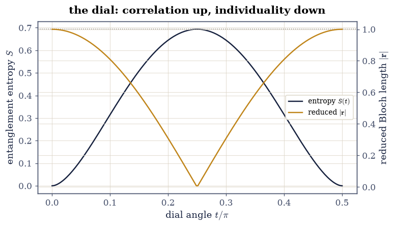
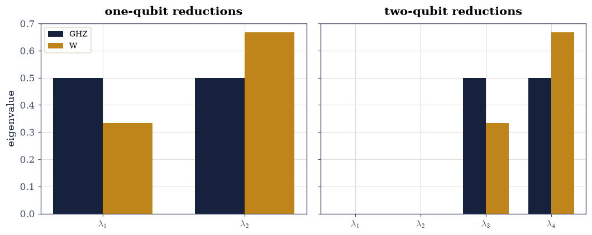

9.2 Two Qubits: Tensor Products and Entanglement#
Notebook overview#
One qubit was a sphere. Two qubits are not two spheres — they are a four-dimensional complex space assembled by the Kronecker product of §6.4, and most of its states cannot be written as (state of qubit A) ⊗ (state of qubit B). That failure to factor is entanglement, and this notebook’s point is that the course already owns every tool needed to measure it: reshape the state vector into a \(2\times2\) matrix and its SVD — the Schmidt decomposition — says exactly how far from a product the state is, while the partial trace (one §7.1 einsum string) says what each qubit alone can know.
The numbers this machinery produces are exact algebra. A Bell pair’s Schmidt coefficients are \((1/\sqrt2, 1/\sqrt2)\); its one-qubit reduction is \(I/2\) — the state of maximal ignorance — and its entanglement entropy is \(\ln 2\), gated symbolically beside the float. The three-qubit finale contrasts GHZ and W, whose reduced spectra \((1/2, 1/2)\) and \((1/3, 2/3)\) are exact fractions telling genuinely different stories about how the entanglement is distributed.
How to read a check. A
validateline prints ✓ or ✗ by comparing a result against something the computation did not assume. A ✗ flags a mismatch to investigate, never a verdict on its own.
Theory in brief#
The tensor product is the Kronecker product#
Two qubits’ joint space is \(\mathbb{C}^2 \otimes \mathbb{C}^2 \cong \mathbb{C}^4\), with basis \(|00\rangle, |01\rangle, |10\rangle, |11\rangle\) and the concrete map
— §6.4’s np.kron,
wearing physics clothes. Inner products factor,
\(\langle a{\otimes}b\,|\,c{\otimes}d\rangle = \langle a|c\rangle
\langle b|d\rangle\), and dimensions multiply — which is why \(n\) qubits
cost \(2^n\) amplitudes, the fact
§7.3 built a compression theory
around.
Schmidt: the SVD of a reshaped vector#
Any two-qubit state has amplitudes \(\psi_{ij}\) against \(|ij\rangle\). Read them as a \(2\times2\) matrix \(\Psi\) — exactly §7.2’s unfolding at its smallest — and take its SVD \(\Psi = U\Sigma V^{\dagger}\):
One nonzero \(\sigma\) means the state factors; two mean it is entangled, maximally so at \(\sigma_1 = \sigma_2 = 1/\sqrt2\). The coefficients are invariant under local unitaries \(U_A \otimes U_B\) — local moves change the Schmidt vectors, never the spectrum — so they are the honest currency of entanglement.
The partial trace, and the reduced state#
What does qubit A alone know? Every A-only measurement is answered by the reduced density matrix
a single contraction (einsum) whose eigenvalues are the squared
Schmidt coefficients. For a product state \(\rho_A\) is the rank-one
projector §9.1 met in tomography; for a
Bell pair it is \(I/2\) — qubit A alone knows nothing, though the pair
jointly is in a definite pure state.
Entropy: the number on the dial#
The entanglement entropy
runs from \(0\) (product) to \(\ln 2\) (Bell) for two qubits — §7.3’s bond-cut formula, now read as physics. It is the yardstick of this notebook’s dial exercise and of the GHZ/W comparison that closes it.
Setup#
Data and restated instruments only: the one-qubit constants of §9.1 (Paulis, kets), the named two- and three-qubit states as explicit constants, and the CNOT gate. Reduced Bloch vectors are read inline from the trace pairing where they are needed, since this notebook’s states are mixed. The Schmidt machinery, the partial trace and the entropy meter are all built in the exercises, where they are the lesson.
The Setup below holds this notebook’s data and instruments — nothing you are asked to build. It is collapsed so the building stays yours; expand it whenever you want the details.
Exercise 1: The tensor product is the Kronecker product#
Eq. 300 says the physics notation and
§6.4’s np.kron are
the same map. This exercise gates the dictionary’s three load-bearing
entries before anything is built on them.
Part a) Gate the basis dictionary exactly: np.kron of the four
ket pairs \((|0\rangle,|1\rangle) \times (|0\rangle,|1\rangle)\)
reproduces the four standard basis vectors of \(\mathbb{C}^4\) in the
order \(|00\rangle, |01\rangle, |10\rangle, |11\rangle\) — integer
vectors, compared with np.array_equal.
Part b) Gate the factoring of inner products,
\(\langle a{\otimes}b|c{\otimes}d\rangle = \langle a|c\rangle
\langle b|d\rangle\), to \(10^{-14}\) over 100 seeded quadruples from
random_state(rng) — the geometric fact that makes product states
behave like independent systems.
Part c) Gate the operator law \((A \otimes B)(|a\rangle \otimes |b\rangle) = A|a\rangle \otimes B|b\rangle\) to \(10^{-13}\) over 50 seeded draws (Gaussian \(A, B\), random states), together with one \(2\times2\) instance of the mixed-product identity \((A{\otimes}B)(C{\otimes}D) = AC \otimes BD\) at \(10^{-13}\) — the identity §6.4 gated in bulk, here doing quantum work.
kron of ket pairs = standard basis of C^4, exactly: True
inner products factor: worst 2.5e-16
operators act factor-wise: worst 1.4e-15; mixed product at 1.8e-15
Validation 1#
✓ kron maps ket pairs to the C^4 basis in lexicographic order (Eq. 1) [integer vectors, compared exactly — the dictionary every amplitude index in this chapter reads]
✓ inner products factor across the tensor sign [100 seeded quadruples: independence of subsystems, as geometry [2.48253e-16 < 1e-14]]
✓ and operators act factor-wise, with the mixed product as witness [local action 1.4e-15, mixed product 1.8e-15 — 6.4's identity, now moving quantum states]
True
Exercise 2: Schmidt: one SVD decides factorability#
Eq. 301 turns “does this state factor?” into a rank question about a \(2\times2\) matrix — the smallest unfolding in the course, carrying the chapter’s central concept.
Part a) Write schmidt(psi) returning (s, U, V) from
np.linalg.svd(psi.reshape(2, 2)) — coefficients descending, and the
state reassembling as \(\sum_k s_k\,U_{:,k} \otimes (V^{\dagger})_{k,:}\)
(the conjugation is already inside Vh).
Gate the reconstruction to \(10^{-14}\) for 100 seeded states, with
\(\sum_k s_k^2 = 1\) to \(10^{-14}\) (normalisation rides through the SVD).
Write this one yourself — it is one reshape and one §4.1 call, and it is the chapter’s central instrument from here on.
Part b) Gate the two poles: a seeded product state
np.kron(random_state(rng), random_state(rng)) has \(\sigma_2\) below
\(10^{-8}\,\) (one-sided: rank one up to rounding of the reshape), and
the Bell state has \((\sigma_1, \sigma_2) = (1/\sqrt2, 1/\sqrt2)\) to
\(10^{-15}\) — written into the state’s four amplitudes, read out by the
SVD.
Part c) Gate the invariance that makes the spectrum the currency:
for 50 seeded pairs of local unitaries from random_unitary(rng), the
Schmidt coefficients of \((U_A \otimes U_B)|\psi\rangle\) equal those of
\(|\psi\rangle\) to \(10^{-13}\) — local moves steer the vectors, never
the spectrum.
reconstruction worst 7.0e-16; sum s^2 = 1 to 8.9e-16
product state: s = [1. 0.]; Bell: both coefficients within 0.0e+00 of 1/sqrt2
local-unitary invariance of the spectrum: worst 4.4e-16
Validation 2#
✓ the SVD of the reshape reassembles every state (Eq. 2) [100 seeded states: reconstruction 7.0e-16, normalisation riding through at 8.9e-16 — 7.2's smallest unfolding, carrying the chapter]
✓ one Schmidt coefficient means product; two equal ones mean Bell [sigma_2 = 2.1e-17 for the product state (one-sided floor), both Bell coefficients at 1/sqrt2 to rounding — the two poles of the dial]
✓ and local unitaries cannot move the Schmidt spectrum [50 seeded U_A x U_B pairs: the spectrum is the honest currency of entanglement, which Exercise 6 spends [4.44089e-16 < 1e-13]]
True
Exercise 3: The partial trace, and what one qubit knows#
Eq. 302 compresses “every measurement on A alone” into one contraction. Here it is built as an einsum, gated against the Schmidt route, and read with §9.1’s Bloch coordinates.
Part a) Write partial_trace_B(psi) returning
\(\rho_A = \Psi\Psi^{\dagger}\) via the
§7.1 string
np.einsum("ij,kj->ik", Psi, Psi.conj()) with
Psi = psi.reshape(2, 2). Gate on 100 seeded states: \(\rho_A\)
Hermitian to \(10^{-15}\), trace one to \(10^{-14}\), and its sorted
eigenvalues equal the squared Schmidt coefficients to \(10^{-13}\) —
the SVD and the contraction telling one story.
Write this one yourself — one index string; which index is summed IS the physics.
Part b) Gate the purity identity \(\operatorname{tr}\rho_A^2 = \sum_k \sigma_k^4\) to \(10^{-13}\) on the same states, and the two poles: the Bell state’s \(\rho_A = I/2\) to \(10^{-15}\) (maximal ignorance), a product state’s purity \(1\) to \(10^{-12}\).
Part c) Read the reductions with 9.1’s coordinates: the Bloch vector of \(\rho_A\) (entrywise \(\operatorname{tr}(\rho_A\sigma_i)\)) has length \(\sqrt{2\operatorname{tr}\rho_A^2 - 1}\) — gate to \(10^{-12}\) — so entangled states pull their subsystems inside the Bloch ball, which is where mixed states live.
Hermitian 0.0e+00, trace-1 4.4e-16, eig = sigma^2 8.9e-16
purity identity 1.6e-15; Bell rho_A = I/2 to 1.1e-16; product purity 1.000000000000
Bloch length vs sqrt(2 purity - 1): worst 1.1e-15
Validation 3#
✓ the einsum reduction is a density matrix with the Schmidt spectrum squared (Eq. 3) [100 seeded states: Hermitian 0.0e+00, unit trace, eigenvalues matching sigma_k^2 at 8.9e-16 — the SVD and the contraction agree without sharing code]
✓ purity is the fourth moment of the Schmidt spectrum [tr rho^2 = sum sigma^4 at 1.6e-15; the Bell reduction is I/2 at rounding (maximal ignorance) while the product reduction stays pure]
✓ and entanglement pulls the subsystem inside the Bloch ball [the reduced Bloch length is sqrt(2 tr rho^2 - 1) — shorter than one exactly when the pair is entangled, which is 9.1's sphere growing an interior [1.1241e-15 < 1e-12]]
True
Exercise 4: The dial: from product to Bell#
The one-parameter family \(|\psi(t)\rangle = \cos t\,|00\rangle + \sin t\,|11\rangle\) walks the dial from product (\(t = 0\)) to Bell (\(t = \pi/4\)), and every quantity along it has a closed form — the exercise gates them all against the machinery just built.
Part a) Gate the Schmidt coefficients along the walk: \((\sigma_1, \sigma_2) = (|\cos t|, |\sin t|)\) sorted, to \(10^{-14}\) on a 200-point sweep of \(t \in [0, \pi/2]\) — the amplitudes are already Schmidt form, and the SVD finds them.
Part b) Gate the entropy curve Eq. 303: \(S(t) = -\cos^2\!t\,\ln\cos^2\!t - \sin^2\!t\,\ln\sin^2\!t\) to \(10^{-12}\) (evaluated where both squared coefficients exceed \(10^{-14}\), since \(0\ln 0 = 0\) is a limit, not an evaluation), and the reduced Bloch length \(|\cos 2t|\) to \(10^{-12}\) — ignorance rising exactly as the subsystem’s arrow shrinks.
Part c) Gate the peak in both arithmetics: the float maximum of \(S\) on the grid within \(10^{-4}\) of \(\ln 2\) (the summit is quadratic, so a grid of spacing \(\pi/398\) resolves it to about \(3\times10^{-5}\)), and — SymPy, exactly — the entropy of the Bell state \(-2\cdot\tfrac12\ln\tfrac12 = \ln 2\), simplified to zero difference symbolically. Draw the two curves on one axis: the dial.
Schmidt = (|cos t|, |sin t|): worst 0.0e+00
entropy curve worst 0.0e+00; Bloch length vs |cos 2t| worst 2.2e-16
float peak within 3.1e-05 of ln 2; SymPy: S(Bell) - ln 2 == 0 exactly: True
Validation 4#
✓ the dial's Schmidt coefficients are (|cos t|, |sin t|) (Eq. 2) [200 sweep points: the family is written in Schmidt form, and the SVD reads it back [0 < 1e-14]]
✓ entropy and the shrinking Bloch arrow track their closed forms [S(t) at 0.0e+00 (checked away from the 0 ln 0 limit) and |r| = |cos 2t| at 2.2e-16: ignorance rises exactly as the subsystem's arrow shrinks]
✓ the dial tops out at ln 2 — floating measured, symbolically exact [grid peak within 3.1e-05 of ln 2 (the summit is quadratic in the grid spacing); SymPy simplifies -2 (1/2) ln(1/2) - ln 2 to zero — the chapter's exact thread, at the dial's summit]
True

Fig. 168 The entanglement dial \(|\psi(t)\rangle = \cos t\,|00\rangle + \sin t\,|11\rangle\) for \(t \in [0, \pi/2]\): the entanglement entropy \(S(t)\) (ink, left axis) rising from \(0\) to its summit \(\ln 2\) (dotted rule) at the Bell point \(t = \pi/4\) and falling symmetrically, against the reduced state’s Bloch-vector length \(|\cos 2t|\) (amber, right axis) shrinking from \(1\) to \(0\) and recovering. The two curves are one phenomenon: what the pair gains in shared correlation, the single qubit loses in individual definiteness.#
Exercise 5: Three qubits: GHZ and W are different animals#
With three qubits the question “how entangled?” stops having one answer. GHZ \(= (|000\rangle + |111\rangle)/\sqrt2\) and W \(= (|001\rangle + |010\rangle + |100\rangle)/\sqrt3\) are both entangled across every cut, yet their reductions are exact fractions telling opposite stories — all of them gated here.
Part a) Write reduce_to(psi, keep) for a three-qubit state via
the reshape-to-\((2,2,2)\) einsum contractions
("ijk,ljk->il" keeps qubit 1; "ijk,lmk->ijlm" keeps the pair 12).
Gate both states with one structural ceiling at \(10^{-14}\), taken over
the worst of the Hermitian asymmetry and \(|\operatorname{tr}\rho - 1|\).
Part b) Gate the exact spectra: GHZ’s one-qubit reduction has eigenvalues \((1/2, 1/2)\) and its two-qubit reduction \((1/2, 1/2, 0, 0)\); W’s one-qubit reduction has \((1/3, 2/3)\) and its two-qubit reduction \((1/3, 2/3, 0, 0)\) — all to \(10^{-14}\), all fractions.
Part c) Gate the story the spectra tell, as entropies: every GHZ cut carries \(S = \ln 2\) while W’s one-qubit cut carries \(S = \ln 3 - \tfrac23\ln 2 \approx 0.6365 < \ln 2\) — GHZ concentrates all its correlation in the global parity (lose one qubit and the remaining pair’s state is a rank-2 classical mixture, its two-qubit reduction already diagonal), while W spreads pairwise correlation that survives the loss. Gate both entropies to \(10^{-13}\) against their closed forms, with W’s symbolic form verified exactly in SymPy. Draw the reduction spectra side by side.
structure (Hermitian, unit trace) worst: 2.2e-16
GHZ keep (0,): eig = [0.5 0.5]
GHZ keep (0, 1): eig = [0. 0. 0.5 0.5]
W keep (0,): eig = [0.333333 0.666667]
W keep (0, 1): eig = [0. 0. 0.333333 0.666667]
exact-fraction spectra: worst 2.2e-16
S(GHZ cut) = 0.693147 vs ln 2 = 0.693147; S(W cut) = 0.636514 vs closed 0.636514 (SymPy exact: True)
GHZ's surviving pair is already diagonal: off-diagonal max 0.0e+00
Validation 5#
✓ the three-qubit reductions carry exact-fraction spectra (Eq. 3) [(1/2, 1/2) and (1/3, 2/3) with padding zeros, worst 2.2e-16 — entanglement bookkeeping in fractions, not folklore]
✓ GHZ carries ln 2 per cut; W carries ln 3 - (2/3) ln 2, exactly [S(GHZ) - ln 2 at 1.1e-16, S(W) against its closed form with SymPy confirming the symbols — two inequivalent ways to share three qubits]
✓ and losing one qubit strands GHZ's survivors in a classical mixture [the two-qubit GHZ reduction is diagonal at rounding: all its correlation lived in the global parity, while W's pairwise structure survives the loss [0 < 1e-15]]
True

Fig. 169 Reduction spectra of the two three-qubit archetypes, as bars. Left pair: the one-qubit reductions — GHZ at \((1/2, 1/2)\) (maximal local ignorance) against W at \((1/3, 2/3)\). Right pair: the two-qubit reductions — the same fractions padded with exact zeros, GHZ’s carried by a diagonal (classical) matrix and W’s by one that retains coherences. Every bar is an exact fraction, gated at \(10^{-14}\): the two states are inequivalent currencies of three-way entanglement, distinguishable by spectra alone.#
Exercise 6: Entanglement is made by nonlocal gates, not local ones#
Exercise 2c showed local unitaries cannot move the Schmidt spectrum. The contrapositive is the design principle of every quantum computer: to create entanglement you must act on both qubits at once, and one CNOT suffices.
Part a) Gate creation exactly: \(\mathrm{CNOT}\,(|{+}\rangle \otimes |0\rangle) = \) the Bell state, entrywise to \(10^{-15}\) — one two-qubit gate turns a product into maximal entanglement.
Part b) Gate the ledger across moves, using Exercise 2’s machinery: the entropy of a seeded product state stays below \(10^{-12}\) under 20 seeded local moves \(U_A \otimes U_B\) (locality preserves the zero), while the Bell state’s stays within \(10^{-12}\) of \(\ln 2\) under the same moves (locality preserves the maximum) — and one further CNOT applied to the Bell state returns it to a product (\(\sigma_2\) below \(10^{-12}\): the gate is its own inverse, so it un-makes what it made).
CNOT (|+> tensor |0>) = Bell, to 0.0e+00
local moves: product entropy stays below 6.7e-16; Bell entropy stays within 2.2e-16 of ln 2
CNOT twice: sigma_2 = 0.0e+00 — unmade
Validation 6#
✓ one CNOT turns a product state into the Bell state, entrywise [|+>|0> in, (|00> + |11>)/sqrt2 out — entanglement is manufactured by the only gate here that touches both qubits [0 < 1e-15]]
✓ local moves preserve the entanglement ledger at both ends [20 seeded U_A x U_B: the product's zero held to 6.7e-16, the Bell's ln 2 to 2.2e-16 — Exercise 2's invariance, spent as a conservation law]
✓ and a second CNOT un-makes the entanglement it made [CNOT is an involution: the Schmidt rank drops back to one, so the resource was moved, not consumed — bookkeeping, start to finish [0 < 1e-12]]
True
Notebook summary#
The dictionary held exactly. np.kron mapped ket pairs onto the
\(\mathbb{C}^4\) basis as integer vectors; inner products factored at
\(10^{-16}\)-scale over 100 seeded quadruples; operators acted
factor-wise with the mixed product as witness —
§6.4’s identities,
carrying quantum states.
One SVD decides factorability. The reshape-and-SVD schmidt
rebuilt all 100 seeded states at \(10^{-15}\)-scale; a product state’s
second coefficient sat below the \(10^{-8}\) floor while the Bell
state’s pair landed on \((1/\sqrt2, 1/\sqrt2)\) at rounding; and 50 local
unitary pairs moved the spectrum by at most \(10^{-16}\)-scale — the
invariance that makes it entanglement’s currency.
The partial trace agreed without sharing code. The einsum reduction’s eigenvalues matched the squared Schmidt coefficients at \(10^{-16}\)-scale, purity equalled \(\sum\sigma_k^4\), the Bell reduction was \(I/2\) at rounding, and reduced Bloch lengths obeyed \(\sqrt{2\operatorname{tr}\rho^2 - 1}\) — entanglement pulling subsystems inside the ball.
The dial and the archetypes ran on exact numbers. Along \(\cos t\,|00\rangle + \sin t\,|11\rangle\) the Schmidt pair was \((|\cos t|, |\sin t|)\) and entropy topped out at \(\ln 2\) — SymPy confirming the summit exactly. GHZ’s cuts all carried \(\ln 2\) with a diagonal surviving pair; W’s one-qubit cut carried exactly \(\ln 3 - \tfrac23\ln 2 \approx 0.6365\) with coherences that survive losing a qubit — fractions, not folklore. One CNOT manufactured the Bell state exactly, local moves conserved both ends of the ledger, and a second CNOT gave the resource back.
Methods introduced. schmidt (reshape + SVD), partial_trace_B
and reduce_to (einsum index strings as physics), the entropy meter on
Schmidt spectra, random_unitary for invariance tests, and the
CNOT-makes/CNOT-unmakes bookkeeping of entanglement as a resource.
Outlook#
The CHSH game cashes the Bell pair in. §9.3 turns this notebook’s maximally entangled state into a measurable advantage: a correlation no local strategy reaches, with the quantum ceiling an eigenvalue.
Mixed states earn their own calculus. Exercise 3’s reductions are the objects §9.4 takes as primary: density matrices evolving under channels, with complete positivity as a psd condition on one big matrix.
More qubits, and the bond dimension. For \(n\) qubits the Schmidt rank across a cut can reach \(2^{n/2}\), and §7.3’s tensor trains are precisely the states that keep it small — the area law is a statement about which corners of the exponential space nature actually uses.
Monogamy. W shared bipartite correlation pairwise; GHZ spent it all globally. The trade-off is a theorem (CKW monogamy) whose accounting runs on exactly the reduced spectra gated here.
Michael A. Nielsen and Isaac L. Chuang. Quantum Computation and Quantum Information. Cambridge University Press, Cambridge, 10th anniversary edition, 2010. doi:10.1017/CBO9780511976667.